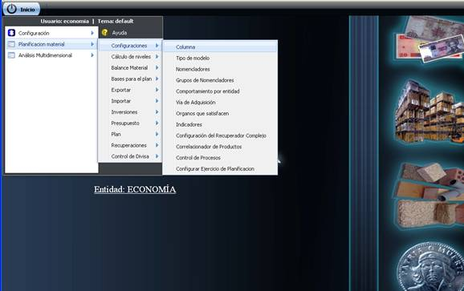
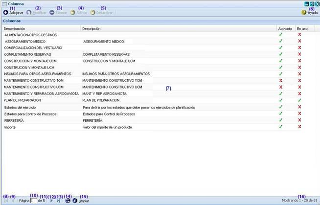
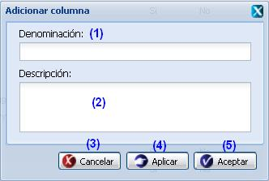
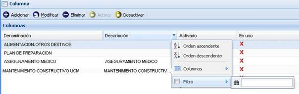

--Columna--
En esta funcionalidad se gestionan las columnas que conforman los tipos de modelos a los que se harán mención posteriormente, y solo tendrán permisos para acceder a esta funcionalidad aquellos usuarios que presenten categoría rector. Para acceder a esta funcionalidad se procede a seleccionar la opción Columna del menú que se muestra para la opción Configuraciones ver Figura 1.

Figura 1. Opción columna.
Luego de acceder a la funcionalidad Columna, el sistema le mostrará la interfaz que aparece en la Figura 2.

Figura 2. Interfaz y acciones de la funcionalidad Columna.
Las diferentes opciones que conforman la figura anterior permiten:
-
Adicionar una columna. Al seleccionar esta opción el sistema le mostrará la interfaz para realizar esta acción. Se puede acceder a esta funcionalidad con las teclas (Alt + I).
-
Modificar una columna previamente seleccionada en el listado. Una vez seleccionada dicha opción, el sistema le mostrará una interfaz con los datos cargados, posibilitando que se modifiquen los que se requieran. Se puede acceder a esta funcionalidad seleccionando una columna y oprimiendo las teclas (Alt + M). Si al modificar la columna se introduce uno que ya existe, el sistema le mostrará un mensaje de error. La validación de cada uno de los campos de la interfaz será muy similar al descrito en el Adicionar columna.
-
Eliminar una columna previamente seleccionada en el listado. Esta acción permite eliminar la(s) columna(s) deseada(s), una vez seleccionada(s) la(s) misma(s) se procede a seleccionar la opción Eliminar de la interfaz, automáticamente se mostrará un mensaje de confirmación, que se puede Aceptar o Cancelar según sea el caso, de presionar la opción Aceptar el sistema le mostrará un mensaje de información sobre el éxito de la operación realizada, quedando eliminada(s) la(s) columna(s) seleccionada(s), si cancela el mensaje de confirmación, el sistema permanece en la interfaz principal y no elimina la(s) columna(s). Se puede realizar esta operación seleccionando la columna en el listado y oprimiendo la tecla (Delete). Si se selecciona una columna que está siendo usada, el sistema no activará la opción Eliminar de la interfaz.
-
Activar una columna previamente seleccionada en el listado. Esta acción permite activar una columna. Una vez seleccionada la misma se procede a seleccionar la opción Activar de la interfaz, automáticamente el sistema le mostrará un mensaje de confirmación, que se puede Aceptar o Cancelar según sea el caso, de presionar la opción Aceptar el sistema le mostrará un mensaje de información sobre el éxito de la operación realizada, quedando activada la columna seleccionada, si cancela el mensaje de confirmación, el sistema permanece en la interfaz principal y no activa la columna. El botón Activar se habilitará después de seleccionar una columna desactivada y que no esté en uso. Se puede acceder a esta operación seleccionando la columna en el listado y oprimiendo la tecla (Alt + T).
-
Desactivar una columna previamente seleccionada en el listado. Esta acción permite desactivar una columna. Una vez seleccionada la misma se procede a seleccionar la opción Desactivar de la interfaz, automáticamente el sistema le mostrará un mensaje de confirmación, que se puede Aceptar o Cancelar según sea el caso, de presionar la opción Aceptar el sistema le mostrará un mensaje de información sobre el éxito de la operación realizada, quedando desactivada la columna seleccionada, si cancela el mensaje de confirmación, el sistema permanece en la interfaz principal y no desactiva la columna. El botón Desactivar se habilitará después de seleccionar una columna activada y que no esté en uso. Se puede realizar esta operación seleccionando la combinación de teclas (Alt + F).
-
Mostrar ayuda de la funcionalidad. Se puede realizar esta operación seleccionando la combinación de teclas (Alt + H).
-
Se muestra el listado de columnas.
-
Ir a la primera página, mostrando las primeras columnas.
-
Ir a la página anterior.
-
Muestra el número de la página donde se encuentra, se puede introducir el número.
-
Muestra el número máximo de páginas.
-
Ir a la siguiente página.
-
Ir a la última página.
-
Actualizar el listado de columnas.
-
Limpiar filtro(s). Esta acción limpiará todos los criterios de búsqueda, deshabilitando los filtros realizados. Se puede realizar esta operación seleccionando la combinación de teclas (Alt + L).
-
Mostrar la cantidad de resultados encontrados.
Adicionar columnas 
Se presiona el botón Adicionar de la interfaz, ver opción 1 de la figura 2. Inmediatamente aparecerá una ventana donde se podrán especificar los datos relacionados con la columna que se desea adicionar, ver figura 3.

Figura 3. Interfaz Adicionar columna.
Las opciones de la figura anterior permiten:
- Introducir la denominación de la columna que desea insertar.
- Introducir una breve descripción de la columna a insertar. Este dato no es obligatorio.
- Cancelar las acciones y salir de la interfaz sin guardar los datos.
- Guardar los datos y limpiar los campos de la interfaz, permitiendo adicionar otra columna.
- Adicionar los datos de la columna al listado y cerrar la interfaz.
Validación de los campos:
-
El campo Denominación es obligatorio, en caso de dejar este campo vacío y presionar el botón Aceptar o Aplicar el sistema debe mostrar un mensaje de error en el mismo campo.
-
No se permite adicionar una Columna con una misma denominación. Si esto ocurre el sistema debe mostrar un mensaje de error.
-
El campo denominación acepta caracteres alfanuméricos hasta 255 caracteres, en caso de introducir algún caracter especial y presionar el botón Aceptar o Aplicar se debe mostrar un mensaje de información notificando que existen campos con valores incorrectos o vacíos y en el mismo campo un mensaje de error. Si sobrepasa la cantidad establecida se debe mostrar un mensaje de error.
-
El campo descripción acepta caracteres alfa-numéricos y caracteres especiales sin límites, puede ser vacío.
-
Si se selecciona más de una columna el sistema deshabilita la funcionalidad Adicionar.
-
Al adicionar una columna, esta se le insertará con estado Activado.
Buscar columnas
Esta funcionalidad permite efectuar una búsqueda mediante filtrado en las columnas. Para efectuar la misma debe estar en la interfaz principal, ver figura 2, una vez que accedió a esta se presiona clic en el botón “ ” que aparece en la parte derecha de cada columna. Luego de presionado el mismo, se procede a desplegar la columna y se ofrece la posibilidad de realizar búsqueda mediante filtrado. Se introduce o selecciona el criterio de filtrado según la información que brinde la columna seleccionada. Inmediatamente se presiona la tecla Enter y el sistema le mostrará en la interfaz las columnas según el criterio de filtrado seleccionado. En caso de que no existan columnas a mostrar para el criterio de filtrado seleccionado el sistema lo notificará mostrando el mensaje de información: “No existen datos que se correspondan con el criterio de búsqueda especificados.”, ver figura 4.
” que aparece en la parte derecha de cada columna. Luego de presionado el mismo, se procede a desplegar la columna y se ofrece la posibilidad de realizar búsqueda mediante filtrado. Se introduce o selecciona el criterio de filtrado según la información que brinde la columna seleccionada. Inmediatamente se presiona la tecla Enter y el sistema le mostrará en la interfaz las columnas según el criterio de filtrado seleccionado. En caso de que no existan columnas a mostrar para el criterio de filtrado seleccionado el sistema lo notificará mostrando el mensaje de información: “No existen datos que se correspondan con el criterio de búsqueda especificados.”, ver figura 4.

Figura 4. Búsqueda por filtrado de columnas de la interfaz.